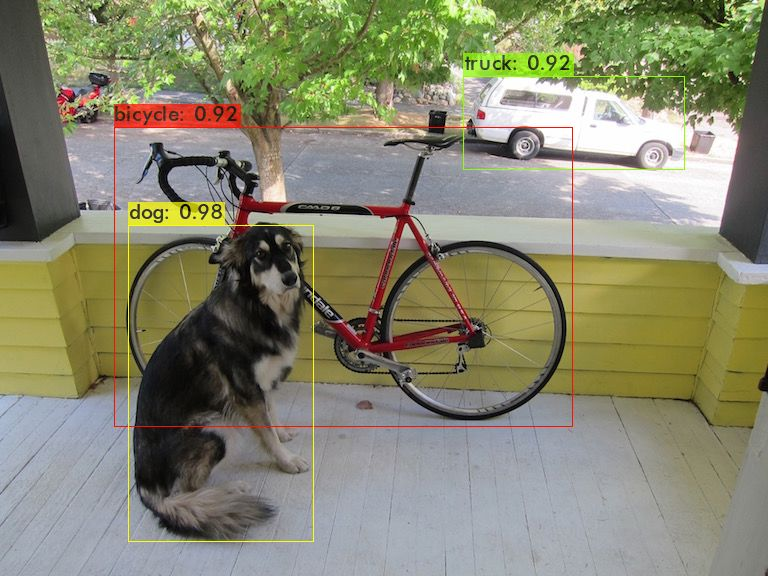
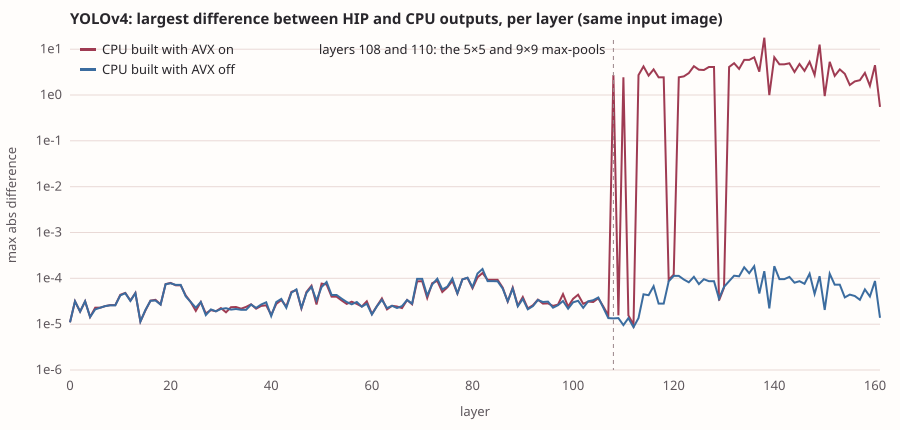
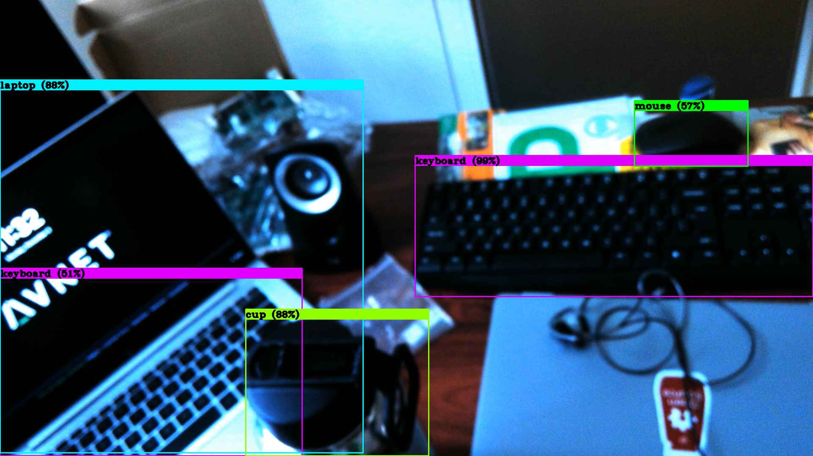
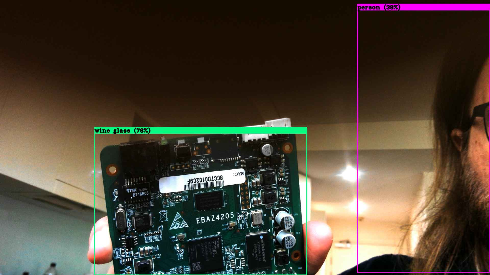

Pyrite.
A YOLOv4 mismatch in the Darknet HIP port, and then a go at making it faster.
Wait, what
In Trialling Skill-Assisted Agentic Porting, the HIP port of Darknet agreed with the original CPU build on every check for the two tiny models, and full YOLOv4 passed 2 of 10: the same objects every time, with boxes overlapping their CPU twins by as little as 89% and confidences off by up to 5.5 points. I put it in the note as "I haven't worked out why yet", and it sat there among the FPS figures looking like a footnote. Then I reread it and went "wait, what do you mean YOLOv4 doesn't match the golden model?" - because that's the whole job of a port, and none of the agents involved had thought to make it stand out from the benchmark numbers and shake me by the shoulders. I was not happy about it: a port that disagrees with its reference is, as far as I could tell, a port that's wrong, and here was the whole 10 minute 54 second run apparently getting its kernels wrong.
So I told an agent to figure out what happened.
The hunt
The first suspect was Mish, the activation function that YOLOv4 has and the tiny models don't (72 Mish layers in yolov4.cfg, none in the other two), and which upstream writes differently for CPU and GPU. The agent swapped the HIP Mish kernel for an exact x·tanh(softplus(x)) and rebuilt. Nothing changed: the dog was still 98% on the GPU and 96% on the CPU.

dog.jpg, HIP build: the test image.So it dumped every layer's output from both builds and compared them. Straight away that turned up a smaller oddity, which is that the two builds don't even resize the input image identically (pixels differ by up to 3e-5, from float arithmetic in the resize code), so to compare like with like it fed the HIP build the CPU build's exact input tensor. With identical inputs the two agreed to within about 5e-5 for the first 107 layers, then split apart at layers 108 and 110 by values of 2 to 3 on activations that top out around 6.5. Those are the stride-1 max-pool layers, 5×5 and 9×9, in YOLOv4's spatial pyramid pooling block, while the 13×13 one after them matched again.

Checked against a plain numpy max-pool, the HIP output was right to 1e-5 and the CPU output was not. The culprit is upstream's AVX max-pool: it processes eight outputs per vector, and when the first element of a window falls off the left edge of the row it skips the whole vector rather than just that element, so every left-hand output loses its valid values. The 13×13 pool is too wide to use the vector path, which is why it escaped. I'd built the CPU reference with AVX on, so the reference was the broken one and the port was fine.
Rebuilt with AVX off, the CPU reference gives the same detections as the port. All three models now pass all ten checks: YOLOv4 at a minimum box overlap (IoU, intersection over union) of 0.99999 and a largest confidence difference of 0.000005, the tiny models at 0.9999 and 0.000008.
Faster
With a correct baseline in hand, the other thing I'd said in the last note was that I expected more than 9.4 FPS from the full model, and that I'd have a go at optimising it. Per-layer timing put about 90% of the forward pass in convolution layers, and a kernel trace on the GPU put roughly 70% of the GPU's time in the matrix multiply behind them, with another 10% in im2col, which lays each convolution's input out as a matrix first. Darknet does all of this through hipBLAS, so the first thing to try was the cheapest one: setting ROCBLAS_USE_HIPBLASLT=1, which sends the matrix multiplies through hipBLASLt without touching the code.
That alone took the YOLOv4 forward pass from 70.5 ms to 48.7 ms. The next change was removing a pass that zeroes each convolution's output buffer before the multiply adds into it, by telling the multiply to overwrite instead (44.5 ms). The last was switching the multiplies to half-precision inputs with 32-bit accumulation and output, which meant a half-precision im2col kernel, converting the weights once per layer, and calling hipblasGemmEx (33.8 ms). All three are in a patch of about a hundred lines to one file, switched by environment variables, and none of it is in the public fork yet.
Forward pass only, median of 24 runs on one image, GPU otherwise idle:
- YOLOv4 (608×608): 70.5 ms, then 48.7, 44.5 and 33.8 ms.
- YOLOv4-tiny: 5.3 ms, then 4.3, 4.0 and 3.2 ms.
- YOLOv3-tiny: 4.7 ms, then 3.4, 3.4 and 2.6 ms.
Whole video runs, as before (vtest.avi, 795 frames, container start-up and drawing included), baseline then the lossless two changes, then with half precision:
- YOLOv4: 13.6, 21.3 and 26.9 FPS.
- YOLOv4-tiny: 153, 202 and 253 FPS.
- YOLOv3-tiny: 174, 232 and 264 FPS.
The first two changes give identical results: all three models still pass all ten checks at the same tolerances. Half precision doesn't, quite. It finds the same objects in every image, with a worst box overlap of 0.998 and confidences within 0.003, which is outside the 0.001 I set for the pass mark (4 of 10 checks for YOLOv3-tiny, 7 of 10 for the other two), so it's a speed-for-precision trade and not a free lunch.
One more thing from re-running everything: the baseline numbers came out higher than the ones I published. The same binary that gave 9.4 FPS on YOLOv4 and 106 and 91 on the tiny models gave 13.6, 174 and 153 today, so the figures in the last note were about a third low. I don't know why, and I haven't been able to reproduce the lower ones.
Where that leaves it
Which is great news, because it means the port was right all along. The original run - one pass of the agent with AMD's skill - got the kernels translated correctly the first time, and the thing I'd been unhappy about turned out to be a bug in the reference I was checking it against. That's properly impressive for a single pass, even allowing for the two lines that needed changing to get it to build and a little bit of effort afterwards to make it fast.
A one-line environment variable getting more than half of the speed-up fits the idea from last time, that a kernel-by-kernel translation leaves optimised libraries on the table, since the better backend was already sitting there. The matrix multiplies appear to be choosing small tiles on this GPU, and bias and activation could be fused into one kernel, so there's more to find. After that there's MIOpen for the convolutions.
If there's a connecting thread to all my computering passions lately, it's real-time-ness, and honestly it goes back years, so seeing YOLO run before my eyes on live camera input feels a bit like the point of all of it. There's a fair bit of latency in it, mind, coming from a variety of sources, and certainly fixable if I were interested in putting in the effort towards truly real-time computer vision. Foreshadowing is a literary device in which—
So: the KV260's camera streams over Ethernet to /dev/video42 on this machine as a webcam, at about 22 FPS, and YOLOv4 on the HIP build reads that device directly, at about 11 FPS end to end. Pointed at my desk, it found the laptop, the keyboard and the mouse (just sitting there, not plugged into anything) - and a second keyboard, which is the laptop's own. It called my water bottle a cup, and missed the second laptop altogether.

and now a silly one, from the blooper reel, feat. a $17 Alibaba former-bitcoin-miner Zynq board.

□